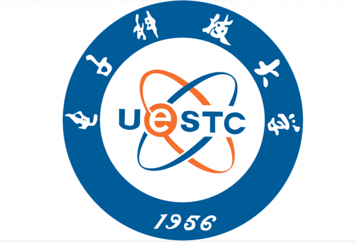

About Me
|
Congju Du is currently a Phd candidate (2019-present) in School of Electronic Information and Communications at Huazhong University of Science and Technology (HUST), under the supervision by Prof. Li Yu. My research focus is on human-centric computer vision such as human pose estimation, human action recognition, and micro-expression recognition. |

|
Education
Huazhong University of Science and TechnologyPh.D. in Information and Communication Engineering, 2019~now |
|
|  |
University of Electronic Science and Technology of ChinaM.Sc. in Information and Communication Engineering, 2016~2019 |
University of Electronic Science and Technology of ChinaB.Eng. in Information and Communication Engineering, 2012~2016 |
Honors and Awards
- Enthusiast Member of Social Activities, HUST, 2020.
- Outstanding Postgraduate Thesis, UESTC (only 1 in Information and Communication Engineering), 2019.
- Postgraduate Academic scholarship, UESTC, 2017-2018.
- IEEE Student Branch Member, UESTC, 2016-2019.
- People's Republic of China Ninth Paralympic Games and The Sixth Special Olympics Excellent volunteer, UESTC, 2016.
- Outstanding Academic scholarship, UESTC, 2012-2016.
Patents
Click to expand or collapse
基于特征分离表征学习的面部运动单元检测方法及系统Li Yu, Congju Du. Invention Patent. |
一种基于对抗学习的半监督面部运动单元检测方法和系统Li Yu, Congju Du. Invention Patent. |
基于自适应补丁学习的面部AU检测模型建立方法及应用Li Yu, Congju Du. Invention Patent. |
一种基于XXX指纹特征的雷达有源欺骗干扰检测方法Bin Tang, Congju Du, Xiaohong Wang, Ying Xiong, Lu Wang. National Defense Patent. |
一种基于XXX的频率编码雷达信号调制类型识别方法Bin Tang, Xiaohong Wang, Ying Xiong, Congju Du, Yirong Zheng. National Defense Patent. |
一种基于XXX的线性调频雷达间歇采样干扰和噪声卷积干扰识别方法Ying Xiong, Lu Wang, Bin Tang, Xiaohong Wang, Congju Du. National Defense Patent. |